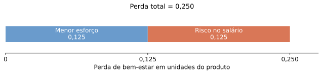
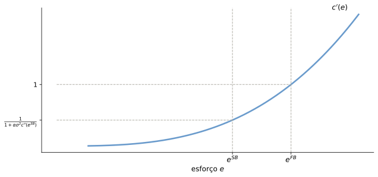
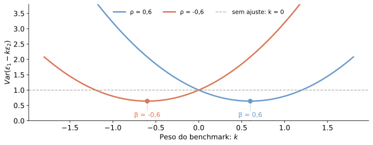
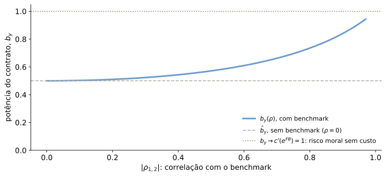

Custo suave, crescente e estritamente convexo: \(c'>0\), \(c''>0\) no interior
Aversão ao risco \(\alpha>0\) e ruído \(\sigma^2>0\)
Para unicidade, supomos estritamente côncavo o problema reduzido do principal
Se \(\sigma^2=0\), dar incentivos não impõe risco: recuperamos o esforço eficiente.
Timing do contrato
%%{init: {"flowchart": {"htmlLabels": false, "padding": 30}}}%%
flowchart LR
A["Acionistas<br/>oferecem w(y)=a+by"] --> B["Gestor escolhe<br/>esforço e (oculto)"]
B --> C["Natureza sorteia<br/>ε ~ N(0,σ²)"]
C --> D["Produto y=e+ε<br/>é realizado"]
D --> E["Salário w=a+by<br/>é pago"]
O esforço é escolhido antes de \(\epsilon\) e nunca é observado diretamente pelos acionistas.
Restrição ao contrato: incentivo linear
\[ w=a+by \]
Pagamento é linear no produto observado \(y\)
\(a\): parte fixa; \(b\): potência do contrato (sensibilidade ao desempenho)
\(a,b\) livres: salário sem piso, podendo ser negativo
Contratos lineares permitem estudar o trade-off risco-incentivo. Aqui buscamos o melhor contrato nessa classe, sem responsabilidade limitada do agente.
First-best: divisão ótima de risco
Esforço observável (ou contratável). No first-best:
Divisão ótima de risco: acionistas ficam com todo o risco da firma
Gestor é compensado apenas pela desutilidade do esforço:
\[ w^{FB}=c\left(e^{FB}\right) \]
Contrato exige um nível determinado de esforço — sem custo de incentivos
First-best: otimização
Acionistas escolhem o esforço que maximiza o excedente total:
\[ \max_{e}\;e-c\left(e\right) \]
CPO:
\[ 1=c^{'}\left(e^{FB}\right) \]
Esforço eficiente: benefício marginal (1) = custo marginal do esforço.
Second-best: esforço não observável
Esforço não pode ser observado, nem escrito no contrato
Incentivo precisa ser provido explicitamente, via \(w\left(y\right)=a+by\)
Completando o quadrado, com \(\left(\mu+c\sigma^{2}\right)^{2}=\mu^{2}+2c\mu\sigma^{2}+c^{2}\sigma^{4}\):
\[ \mathbb{E}\left[e^{cx}\right]=e^{c\mu+\frac{c^{2}\sigma^{2}}{2}}\underbrace{\int_{-\infty}^{\infty}(2\pi\sigma^{2})^{-\frac{1}{2}}e^{-\frac{\left(x-\left(\mu+c\sigma^{2}\right)\right)^{2}}{2\sigma^{2}}}dx}_{=1,\ \text{densidade de uma normal}} \]
Aplicando ao gestor: equivalente-certeza
Usando \(\mathbb{E}\left[e^{cx}\right]=e^{c\mu+c^{2}\sigma^{2}/2}\) com \(c=-\alpha b\), \(\mu=e\):
\(b\) é a potência do contrato e, pela IC, o custo marginal de esforço no equilíbrio, \(c'(e^{SB})\) — não o esforço \(e^{SB}\) em si (que é \(b/c\), e só coincide numericamente com \(b\) quando \(c=1\))
Quanto maior \(\alpha\) (aversão ao risco) ou \(\sigma^2\) (ruído), menor a potência do contrato e menor o esforço
Risco moral corta o esforço pela metade neste exemplo: \(e^{SB}\) é metade do esforço eficiente \(e^{FB}\). Com esforço observável não seria preciso incentivo algum (\(b=0\), seguro completo).
O contrato em movimento
A perda total tem duas parcelas
\[L=\underbrace{[e^{FB}-c(e^{FB})]-[e^{SB}-c(e^{SB})]}_{\text{excedente perdido com menor esforço}}+\underbrace{\frac{\alpha b^2\sigma^2}{2}}_{\text{prêmio de risco}}\]

Mesmo exemplo: \(\alpha=\) 1, \(\sigma^2=\) 1, \(c=\) 1. A perda inclui produzir menos e remunerar o risco imposto.
A perda em um único gráfico
\(c'(e)\): first-best vs. second-best

Felipe Iachan, notas de aula (2024). Curva genérica ilustrativa; no caso quadrático anterior, \(c'(e)=ce\) seria uma reta.
Aqui “first-best” é o benchmark com esforço contratável: não é preciso nenhum instrumento de incentivo (\(b=0\) basta, junto com \(w=c(e^{FB})\)). É um sentido diferente do “first-best” que aparece mais adiante na figura de benchmarking — lá, o esforço continua não-contratável, e “first-best” descreve o limite em que o risco de prover incentivo desaparece.
Determinação de \(b\): o “poder” do contrato
O custo de impor risco reduz a potência do contrato e o esforço do gestor
\(b\) resume a potência do contrato — quanto do desempenho da firma o gestor carrega
Quanto maior \(\alpha\sigma^2\), mais caro é dar incentivos, e menor o \(b\) ótimo
Duas ações: o caso discreto
Por que uma versão discreta?
O modelo CARA-Normal supõe esforço contínuo e utilidade exponencial. O que sobra do resultado num ambiente sem a forma CARA-Normal — outra utilidade, produto discreto?
Ambiente: duas ações
Agente e principal em um problema estático.
Duas ações para o agente: \(a_{1}\)domina\(a_{0}\) — produto esperado maior
\(a_1\) é mais custosa: \(c\left(a_{1}\right)\equiv c>c\left(a_{0}\right)=0\)
Opção externa do agente: \(\underline{U}\)
Produto da firma \(y\): retirado de \(\left\{ y_{1},y_{2},...,y_{n}\right\}\) ordenado, com distribuições \(\pi\left(y,a_{i}\right)\)
Acionista quer implementar\(a_1\).
Hipóteses para o perfil de salários
Principal neutro ao risco; agente com \(u'>0\) e \(u''<0\)
é a razão de verossimilhança (likelihood ratio) do estado \(y\).
Estados \(y_i\)mais prováveis sob \(a_0\) do que sob \(a_1\) levam a consumo menor
Intuição: observar esse estado é “má notícia” sobre o esforço
“Punição” é salário menor no perfil relativo; não significa salário negativo
Exemplo ilustrativo: 2 estados
estado
y
π(y,a₁)
π(y,a₀)
π(y,a₀)/π(y,a₁)
baixo
0
0,2
0,7
3,50
alto
10
0,8
0,3
0,38
\(a_1\) desloca probabilidade para o estado alto. A razão de verossimilhança é \(>1\) no estado baixo (pune) e \(<1\) no estado alto (recompensa) — o salário deve ser crescente em \(y\) neste exemplo.
Salário crescente em \(y\)?
Sob que condições o salário ótimo é crescente em \(y_i\)? Bônus lineares fazem sentido?
Resposta: razão de verossimilhança monótona
MLRP: quanto maior \(y\), melhor a notícia sobre o esforço.
\[ \frac{\pi(y,a_0)}{\pi(y,a_1)}\;\downarrow\text{ em }y \quad\Longrightarrow\quad \frac{1}{u'(w)}\;\uparrow \quad\Longrightarrow\quad w\;\uparrow \]
Salário ótimo não decrescente em \(y\).
Passa pela CPO, com \(\lambda_{IC}>0\) e \(u''<0\). Milgrom (1981); Grossman e Hart (1983).
Razão de verossimilhança em movimento
Binomiais com \(n=6\) e \(p=0{,}5\mp\Delta/2\); \(\underline{U}+c=5\), \(c=0{,}5\). Parâmetros ilustrativos.
Com \(b_{y}y+b_{z}z\sim N\left(b_{y}e+b_{z}\overline{z};\;\underbrace{b_{y}^{2}\sigma_{1}^{2}+b_{z}^{2}\sigma_{2}^{2}+2b_{y}b_{z}\sigma_{1,2}}_{Var\left(w\right)}\right)\).
IC e restrição de participação
Equivalente-certeza do agente: \(a+b_{y}e+b_{z}\overline{z}-c\left(e\right)-\dfrac{\alpha}{2}Var\left(w\right)\).
Note que \(\dfrac{\sigma_{1,2}}{\sigma_{2}^{2}}=\dfrac{Cov\left(y,z\right)}{Var\left(z\right)}=\beta_{y\rightarrow z}\): coeficiente de uma regressão linear de \(y\) em \(z\).
em que \(\rho_{1,2}\) é a correlação entre os dois ruídos.
\(\left(1-\rho^{2}\right)\sigma_{1}^{2}<\sigma_{1}^{2}\) sempre que \(\rho\neq0\): o benchmark filtra parte do risco, sem custo em termos de incentivo.
Por que o coeficiente de regressão?
Considere o ruído ajustado \(\epsilon_1-k\epsilon_2\):
\[V(k)=\sigma_1^2+k^2\sigma_2^2-2k\sigma_{1,2}\]
Mínimo em \(k=\beta=\sigma_{1,2}/\sigma_2^2\)
Resíduo ortogonal ao benchmark: \(Cov(\epsilon_1-\beta\epsilon_2,\epsilon_2)=0\)
Para cada \(b_y\) fixo, \(b_z=-b_y\beta\) minimiza \(Var(w)\)
Projeção e resíduo: a geometria do filtro
O resíduo tem variância mínima

Ilustração: σ₁²=σ₂²=1; correlações ρ=±0,6. As variâncias e correlações são parâmetros hipotéticos.
Em ambos os exemplos, o mínimo é \(0{,}64\): o sinal do ajuste muda, o ganho depende de \(\rho^2\).
Mesma forma do problema CARA-Normal, com \(\sigma_1^2\) substituído por \(\left(1-\rho^2\right)\sigma_1^2\)
Menor risco residual \(\Rightarrow\)contrato de maior potência, mais perto de implementar o esforço de first-best — o risco moral não desaparece, só fica mais barato de resolver
Se \(\rho\neq0\), \(b_y>\hat b_y\): maior potência e esforço, sob nossas hipóteses interiores
Se \(\rho=0\), \(b_y=\hat b_y\): o benchmark não reduz o risco residual
Poder do contrato vs. correlação

Ilustrativo: \(\alpha=\) 1, \(\sigma_1^2=\) 1, \(c''=\) 1 (custo quadrático, \(c''\) constante — a fórmula de \(b_y(\rho)\) usada aqui pressupõe esse caso). “First-best” aqui é um sentido diferente do \(b=0\) do slide “Estática comparativa: FB vs. SB”: o esforço continua não-contratável (risco moral não desaparece); \(b_y\to1\) é o valor de \(c'(e^{FB})\) que o contrato precisaria implementar, e que se torna gratuito de prover quando o risco residual \(\to0\).